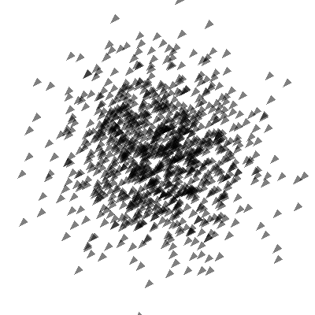

Note
Click here to download the full example code
Use a Geometry Shader¶
import numpy as np
from vispy import gloo
from vispy import app
# geometry shaders require full OpenGL namespace provided by PyOpenGL
gloo.gl.use_gl('gl+')
position = np.random.normal(loc=0, scale=0.3, size=(1000, 2)).astype('float32')
VERT_SHADER = """
#version 330
in vec2 a_position;
void main (void) {
gl_Position = vec4(a_position, 0, 1);
gl_PointSize = 3.0;
}
"""
GEOM_SHADER = """
#version 330
// Simple geometry shader: takes one point as input,
// emits one triangle as output.
layout (points) in;
layout (triangle_strip, max_vertices=3) out;
void main(void) {
vec4 p = gl_in[0].gl_Position;
gl_Position = p;
EmitVertex();
gl_Position = p + vec4(0.06, 0.03, 0, 0);
EmitVertex();
gl_Position = p + vec4(0.03, 0.06, 0, 0);
EmitVertex();
EndPrimitive();
}
"""
FRAG_SHADER = """
#version 330
out vec4 frag_color;
void main()
{
frag_color = vec4(0,0,0,0.5);
}
"""
class Canvas(app.Canvas):
def __init__(self):
app.Canvas.__init__(self, keys='interactive', size=(400, 400))
self.program = gloo.Program()
self.program.set_shaders(vert=VERT_SHADER, geom=GEOM_SHADER,
frag=FRAG_SHADER)
self.program['a_position'] = gloo.VertexBuffer(position)
gloo.set_viewport(0, 0, self.physical_size[0], self.physical_size[1])
self.context.set_clear_color('white')
self.context.set_state('translucent', cull_face=False,
depth_test=False)
self.show()
def on_resize(self, event):
gloo.set_viewport(0, 0, event.physical_size[0], event.physical_size[1])
def on_draw(self, event):
self.context.clear()
self.program.draw('points')
if __name__ == '__main__':
canvas = Canvas()
app.run()
Total running time of the script: ( 0 minutes 0.577 seconds)